Материалы
Реставрация мебели из карельской берёзы
Рисунок карельской берёзы особенно заметен на полированной поверхности. При утрате части фанеровки новый фрагмент подбирают по цвету и направлению волокон.

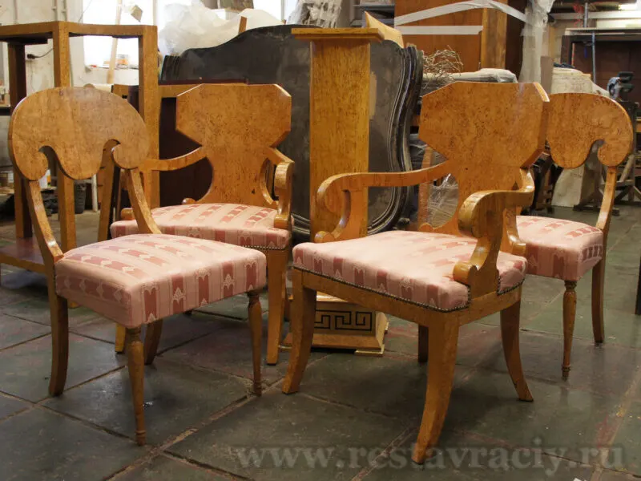
О чём рассказывает мастерская
- Особенности отделки мебели из карельской берёзы
- Особенности расчистки мебели из карельской берёзы
- Что такое карельская берёза
- Азбука краснодеревщика
- Береза в мебельном деле России XVIII - начала XX века
В материале мастерской
Фотографии и детали


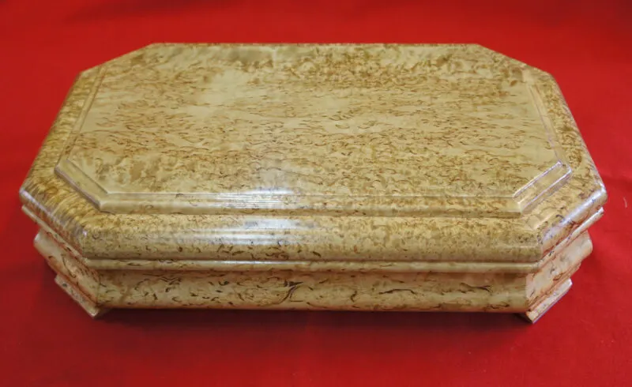
Открыть снимок у мастерской

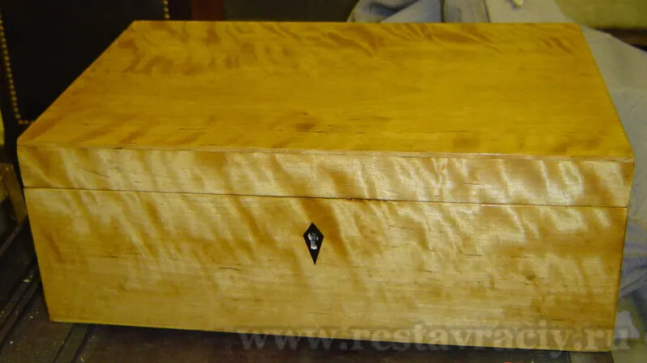
Открыть снимок у мастерской

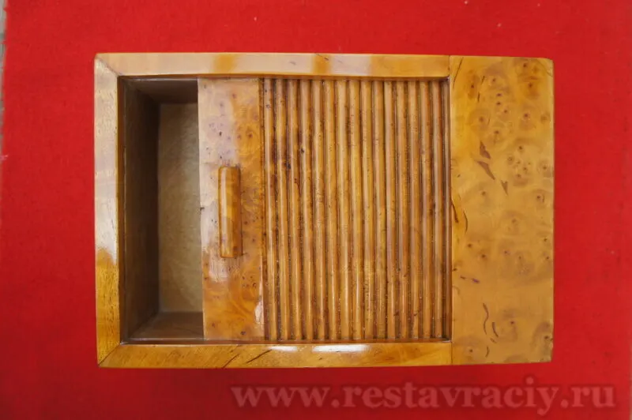
Открыть снимок у мастерской

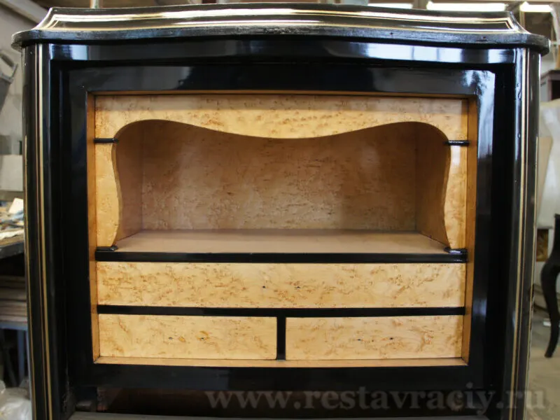
Открыть снимок у мастерской

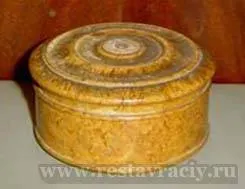
Открыть снимок у мастерской

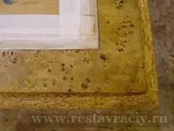
Открыть снимок у мастерской

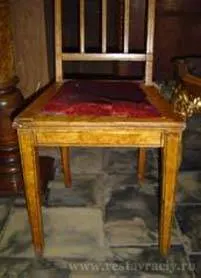
Открыть снимок у мастерской

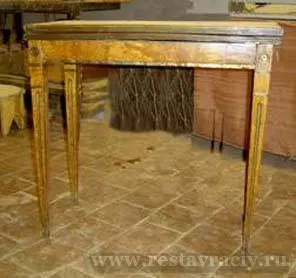
Открыть снимок у мастерской

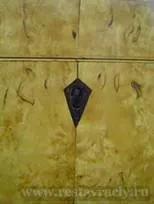
Открыть снимок у мастерской

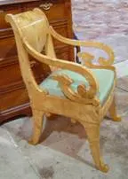
Открыть снимок у мастерской

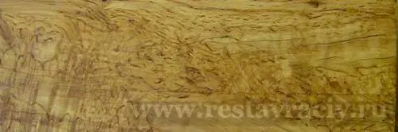
Открыть снимок у мастерской
Посмотреть снимки с сайта мастерской 1
Оригинальные фотографии откроются здесь с сайта мастерской.
 Открыть снимок у мастерской
Открыть снимок у мастерской Есть похожая вещь?
Подберите ракурсы для предварительной оценки.